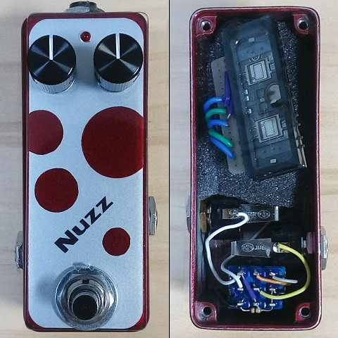
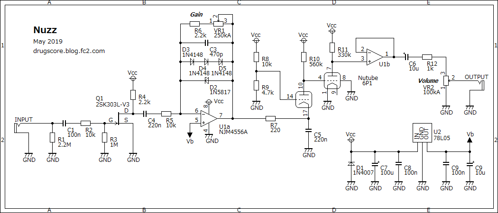
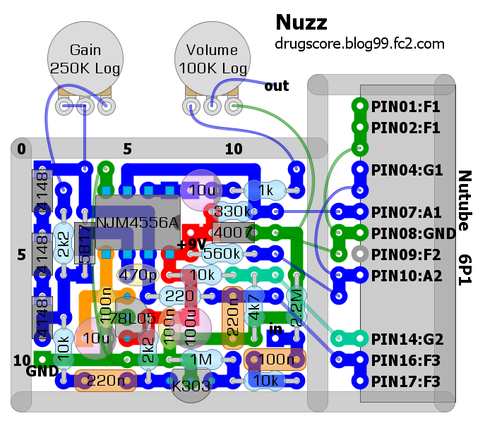

Nuzz
2019年07月20日 カテゴリー：自作エフェクター（アナログ）

「Nutube自作エフェクターコンテスト」第二弾に向けて製作したエフェクターです。読み方は「ニャズ」で、一応肉球のような筐体デザインとなっています。
第一回コンテストでアイデアが出尽くしているのでどのような回路にするか悩みましたが、誰もやっていなさそうなグリッド接地回路を採用することにしました。Nutubeでのグリッド接地回路では、入力をフィラメントに加えるしかありません。フィラメントは過大入力により焼き切れてしまうため、必ずクリッピングが必要です。そういうわけでハードクリップした音を使うファズを作ろうと考えました。
▽回路図

＜Nutube周辺＞
フィラメントへの入力はなぜか片方だけでは出力が低くなったので両方にしています。R9～R11は最も増幅率が高くなるように調節しました（R9は通常トリマーにする必要があると思います）。それでもNutube部分では5倍程度の増幅率なので歪ませるのは無理で、ただ通すだけという形になってしまいました。フィラメントの電圧は実測0.9V～1.2V程度と低いですが問題ないようです。いろいろと実験していたので、寿命が縮んだり動作がおかしくなっている部分があったりするかもしれません。オペアンプは念のため出力電流に余裕があるNJM4556Aを使用しました。
＜クリッピング＞
ファズはあまり作ったことがなく、ファズっぽい音というのは何なのかイマイチわかりません。Fuzz Face Analysisというページを見てみると、Fuzz Faceはかなり非対称に偏った歪みで、デューティ比が極端な矩形波となっています。おそらく偶数次倍音が多く出ているでしょう。これを踏まえ、クリッピングは片側をショットキーダイオード1個にするという極端なものとしました。半波整流にすることも検討しましたが、あまり使いやすいといえる音ではないと思います。デューティ比が極端な矩形波については、オペアンプを使って実現させるのは難しく、再現に至りませんでした。
▽レイアウト

HAMMOND1590Aサイズに詰め込みました。Nutubeはスカスカのスポンジで挟み込んでいます。スイッチング時のマイクロフォニックノイズはNuverdrive+より少なめでした。
周波数特性については、低域はカットせず高域をかなりカットするような形です。ZOOM MS-50Gに入っているTB MK1.5（おそらくトーンベンダー）と比較すると似たニュアンスの音でしたので、それなりにファズっぽさというものを出すことができていると思います。